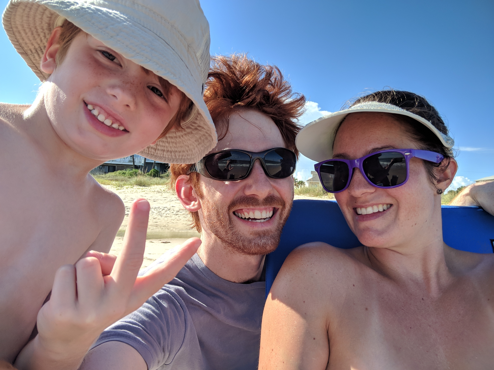

Mark Lynch |
|

|
Web Programming Fall 2018 |
Visit GSU's Computer Science Department
More about me ...
My Favorite Quote
“Believe nothing, no matter where you read it, or who said it, no matter if I have said it, unless it
agrees with your own reason and your own common sense.” - Buddha
Biography
Education
- 2003 - 2007: Starr's Mill High School
- 2007 - 2009: Georgia State University
- 2015 - 2019: Georgia State University
Job History
- 2008 - 2016: Fifth Group Restaurants - Server
- 2016 - 2017: Batteries.com - Major Account Sales/
Product Page Maintenance
- 1997 - 2016: Various -
Actor
My Hobbies
- Spending time with my amazing family
- Working on personal programming projects. See more on my Github page.
- Watching movies and TV shows
- Playing video games
- General tinkering. Whether it be...
- Building, repairing, or reconfiguring PC and network hardware. See more at Tom's Hardware
- Working on my house, cars, mowers
- Or, just gluing my son's toys back together
My Favorite Games
- Portal 2
- Kerbal Space Program
- Bioshock
- Chrono Trigger
- The Witcher 3
|